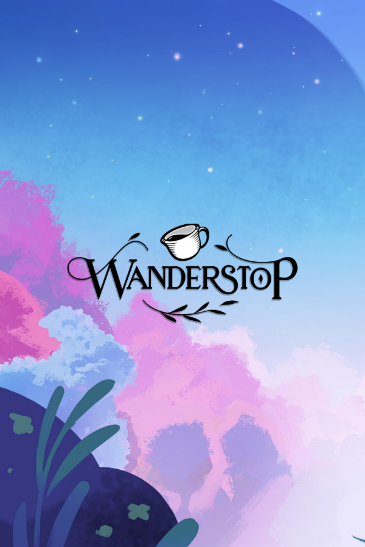

Wanderstop
Every archived year-end list appearance, including placement and points earned.
About the Game
Wanderstop is a narrative-centric cozy game about change and tea. Playing as a fallen fighter named Alta, you’ll manage a tea shop within a magical forest and tend to the customers who pass through. But Alta does not want to be here. And if she gets her way, the tea shop will be nothing but a brief and painful memory. Wanderstop is a tea shop management ritual. Grow and harvest the ingredients needed for tea, and then mix them together in an unusual tea-making contraption. Along the way, speak with the many travelers who pass through the shop, learn their stories and make tea that’s just right for them. In your downtime, you might tidy up around the clearing, decorate the shop in your style, or just sit on a bench with a cup of tea and listen to your own thoughts. Maybe doing nothing at all is okay. The shop demands patience, it rejects those who have come only in the pursuit of growth unchecked. And that’s why Alta can’t be here. It’s why she’ll never make it. This isn’t who she is. No, she’s a fighter! Why would anyone insist on turning the world’s greatest championship warrior into a docile shopkeeper?! With everything she’s capable of?? No no no, she won’t, she won’t do it... she can’t… Wanderstop is a game from the team at Ivy Road, including Davey Wreden (creator of The Stanley Parable and The Beginner’s Guide), Karla Zimonja (co-creator of Gone Home and Tacoma) and Daniel “C418” Rosenfeld (the music of Minecraft).
| Released | 2025-03-11 |
|---|---|
| Developer | Ivy Road |
| Publisher | Annapurna Interactive |
| Genres | Adventure, Simulation, Indie |
| Platforms | PC |
SingleplayerSteam AchievementsFull controller supportSteam CloudStory RichThird PersonHorrorFantasyFemale Protagonist3DColorfulCrafting
Where to Buy
Game information provided by RAWG.
Points by Year
List History
| Year | Source | List | Placement | Points |
|---|---|---|---|---|
| 2025 | Inverse | The 25 Best Games Of 2025, Ranked | 12 | 3 |
| 2025 | NPR | The best games of 2025, picked by NPR's staff | Unranked | 1 |